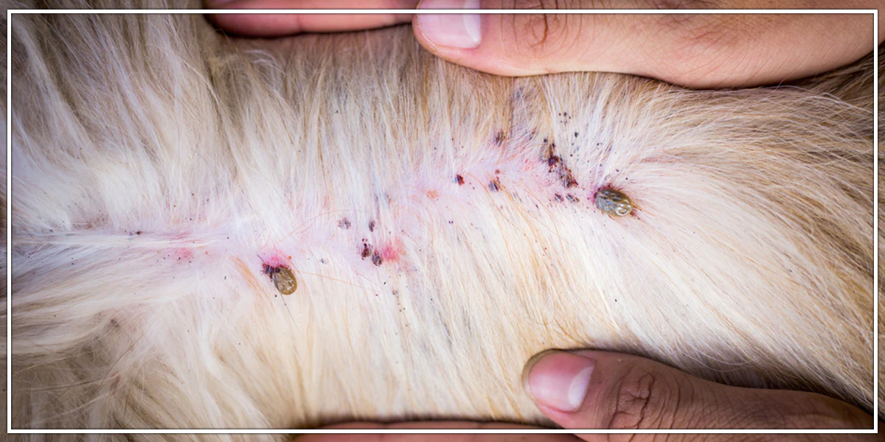

Rabies (hydrophobia) is a fatal viral disease that can affect any mammal, although the close relationship of dogs with humans makes canine rabies a zoonotic concern. Vaccination of dogs for rabies is commonly required by law. Please see the article dog health for information on this disease in dogs. Canine parvovirus is a sometimes fatal gastrointestinal infection that mainly affects puppies. It occurs worldwide. Canine coronavirus is a gastrointestinal disease that is usually asymptomatic or with mild clinical signs. The signs are worse in puppies. Canine distemper is an often fatal infectious disease that mainly has respiratory and neurological signs. Canine influenza is a newly emerging infectious respiratory disease. Up to 80 percent of dogs infected will have symptoms, but the mortality rate is only 5 to 8 percent. Infectious canine hepatitis is a sometimes fatal infectious disease of the liver.[6] Canine herpesvirus is an infectious disease that is a common cause of death in puppies less than three weeks old.
Pseudorabies (Morbus Aujeszky) is an infectious disease that primarily affects swine, but can also cause a fatal disease in dogs with signs similar to rabies.[8] Canine minute virus is an infectious disease that can cause respiratory and gastrointestinal signs in young puppies.
Brucellosis is a sexually transmitted bacterial disease that can cause uveitis, abortion, and orchitis in dogs. Leptospirosis is an infectious disease caused by a spirochaete. Symptoms include liver and kidney failure and vasculitis. Lyme disease is a disease caused Borrelia burgdorferi, a spirochaete, and spread by ticks of the genus Ixodes. Symptoms in dogs include acute arthritis, anorexia and lethargy. There is no rash as is typically seen in humans. Ehrlichiosis is a disease caused by Ehrlichia canis and spread by the brown dog tick, Rhipicephalus sanguineus. Signs include fever, vasculitis, and low blood counts.
Rocky Mountain spotted fever is a rickettsial disease that occurs in dogs and humans. It is caused by Rickettsia rickettsii and spread by ticks of the genus Dermacentor. Signs are similar to human disease, including anorexia, fever, and thrombocytopenia. Clostridium species are a potential cause of diarrhea in dogs. Associated species include C. perfringens and C. difficile. Kennel cough is an infectious respiratory disease which can be caused by one of several viruses or by Bordetella bronchiseptica. Ivasculitis most commonly occurs in dogs in close confinement such as kennels
Blastomycosis is a fungal disease caused by Blastomyces dermatitidis that affects both dogs and humans. Dogs are ten times more likely to be infected than humans. The disease in dogs can affect the eyes, brain, lungs, skin, or bones. Histoplasmosis* is a fungal disease caused by Histoplasma capsulatum that affects both dogs and humans. The disease in dogs usually affects the lungs and small intestine. Coccidioidomycosisis a fungal disease caused by Coccidioides immitis or Coccidioides posadasii. that affects a variety of species, including dogs. In dogs signs of primary pulmonary disease include a cough, fever, weight loss, anorexia, and lethargy. Disseminated disease occurs when the fungus has spread outside of the lungs and may include clinical signs such as lameness, pain, seizures, anterior uveitis, and localized swelling. Diagnosis of Valley Fever may include multiple tests, including serology and radiology. According to a study performed in the Tucson and Phoenix area, 28% of dogs will test positive for exposure to the fungus by two years of age, but only 6% of the dogs will be ill with clinical disease. There is an increased risk of infection associated with amount of time spent outdoors, a larger roaming space accessed by the dog, and increasing age. Cryptococcosisis a fungal disease caused by Cryptococcus neoformans that affects both dogs and humans. It is a rare disease in dogs, with cats seven to ten times more likely to be infected. The disease in dogs can affect the lungs and skin, but more commonly the eye and central nervous system.
Ringworm is a fungal skin disease that in dogs is caused by Microsporum canis (70%), Microsporum gypseum (20%), and Trichophyton mentagrophytes (10%). Typical signs in dogs include hair loss and scaly skin. Sporotrichosis is a fungal disease caused by Sporothrix schenckii that affects both dogs and humans. It is a rare disease in dogs, with cat and horse infections predominating in veterinary medicine. The disease in dogs is usually nodular skin lesions of the head and trunk. Aspergillosisis a fungal disease that in dogs is caused primarily by Aspergillus fumigatus. Infection is usually in the nasal cavity. Typical signs in dogs include sneezing, nasal discharge, bleeding from the nose, and ulcerations of the nose. Pythiosis is a disease caused by a water mould of the genus Pythium, P. insidiosum. It occurs primarily in dogs and horses, but can also affect humans. In dogs it affects the gastrointestinal system and lymph nodes, and rarely the skin. Mucormycosis is a collection of fungal and mold diseases in dogs including pythiosis, zygomycosis, and lagenidiosis that affect the gastrointestinal tract and skin.
Heartworm disease is caused by Dirofilaria immitis, which uses the mosquito as its vector. Heartworms live in the pulmonary artery and right ventricle of the heart. Heartworm disease in dogs is spread by mosquitoes that harbor the parasite Dirofilaria immitis. Signs include cough, difficulty breathing, and death. Gnathostomiasis is a disease from mammal feces and undercooked seafood. Intestinal parasites Hookworms are a common parasite of dogs. The most common is Ancylostoma caninum, followed by Uncinaria stenocephala and A. braziliense. Signs include diarrhea, vomiting, and weight loss.
Tapeworms are also common and in the dog are usually Dipylidium caninum, which is spread by ingesting fleas and lice. Also common is Taenia pisiformis, spread by ingesting rabbits and rodents. Rare tapeworm infections are caused by species of the genera Echinococcus, Mesocestoides, and Spirometra. There are usually no symptoms. Toxocariasis is an infection of Toxocara canis or Toxascaris leonina. Signs are usually mild, but may include diarrhea, pot-bellied appearance, poor growth, and vomiting. Whipworms are parasites that live in the cecum and large intestine. The canine whipworm is Trichuris vulpis.
Ticks are an external parasite of the dog and can spread diseases such as Lyme disease, Rocky Mountain spotted fever, babesiosis, and ehrlichiosis. They can also cause a neurological disorder known as tick paralysis.
Mites Ear mites are microscopic members of the species Otodectes cynotis. Symptoms include itching, inflammation, and black debris in the ear. Cheyletiellosis is a mild pruritic skin disease caused by Cheyletiella yasguri. Humans can be transiently infected. Chiggers, also known as harvest mites, can cause itching, redness and crusting of the skin. Demodicosis, also known as demodectic mange, is caused by Demodex canis mites which live in small numbers in sebaceous glands and hair follicles. These mites can cause inflammation and hair loss, and may also lead to secondary bacterial infections such as fever, lethargy, and enlarged lymph nodes. Sarcoptic mange is caused by Sarcoptes scabiei canis. Signs include intense itching and scaling, and is contagious to humans.
Hip dysplasia is an inherited disease in dogs that is characterized by abnormal development of the acetabulum
and head of the femur. It is more common in large breeds.
Elbow dysplasia is a condition found more commonly in large breeds. It incorporates several different hereditary
conditions of the elbow, including osteochondritis of the medial condyle of the humerus, fragmentation of the
medial coronoid process of the ulna, and ununited anconeal process of the ulna.
• Luxating patella is a medial or lateral displacement of the patella, or kneecap. It is strongly suspected to
be inherited, but can also result from trauma.[36] It is more common in smaller breeds of dogs
• Osteochondritis dissecans (OCD) is separation of immature articular cartilage from underlying bone. It is
caused by osteochondrosis, which is characterized by abnormal endochondral ossification of epiphyseal cartilage.
It is most commonly seen in the stifle, elbow, shoulder, and hock.
• Panosteitis is a common disease of unknown cause that causes pain and a shifting leg lameness in medium and
large breed dogs. It affects the long bones of the hind and forelimbs.
• Legg–Calvé–Perthes syndrome, also known as Perthes disease or avascular necrosis of the femoral head, is
characterized by a deformity of the head of the femur and hip pain. It occurs in small-breed puppies.
• Back pain in dogs, particularly in long-backed breeds, such as Basset Hounds and Dachshunds, is usually caused
by intervertebral disk disease. It is caused by degeneration and protrusion of the disk and compression of the
spinal cord. It occurs most commonly in the cervical and thoracolumbar regions. Signs include back pain, hind
limb weakness, and paralysis.
• Congenital vertebral anomalies, including butterfly, block, and transitional vertebrae, and hemivertebrae, are
a collection of malformations of the spine in animals. Most are not clinically significant, but they can cause
compression of the spinal cord by deforming the vertebral canal or causing instability.
• Craniomandibular osteopathy is a hereditary disease in West Highland White Terriers and also occurs in other
terrier breeds. It is a developmental disease in puppies causing extensive bony changes in the mandible and
skull. Signs include pain upon opening the mouth.
• Hypertrophic osteopathy is a bone disease secondary to disease in the lungs. It is characterized by new bone
formation on the outside of the long bones.
• Hypertrophic osteodystrophy is a bone disease in rapidly growing large breed dogs. Signs include swelling of
the metaphysis (the part of the bone adjacent to the joint), pain, depression, loss of appetite, and fever. The
disease is usually bilateral in the limb bones.
• Spondylosis, known as spondylosis deformans in dogs, is growth of osteophytes on the ventral and lateral
surfaces of the vertebral bodies. It is usually an incidental finding on radiographs and rarely causes
symptoms.
• Masticatory muscle myositis (MMM) is an inflammatory disease in dogs affecting the muscles of the jaw. Signs
include swelling of the jaw muscles and pain on opening the mouth. In chronic MMM there is atrophy of the jaw
muscles, and scarring of the masticatory muscles due to fibrosis may result in inability to open the mouth
(trismus).
There are several reported routes of transmission of the rabies virus.
• Rabies is most often transmitted through a bite from an infected animal.
• Less frequently, it can be passed on when the saliva of an infected animal enters another animal’s body
through mucous membranes or an open, fresh wound.
• The risk for contracting rabies runs highest if your cat is exposed to wild animals.
Outbreaks can occur
in populations of wild animals (most often raccoons, bats, skunks and foxes in this country) or in areas where
there are significant numbers of unvaccinated, free-roaming dogs and cats.
• In the United States, rabies is reported in cats more than in any other domestic species.
• Unvaccinated cats who are allowed to roam outdoors are at the highest risk for rabies infection.
• Feral cat populations remain a reservoir host for the rabies virus.
• Vaccination is the key—and in many areas of the country, such as New York City, it's the law.
• Some local ordinances require lengthy quarantines—or euthanasia—of pets who have bitten someone if their
owners do not have proof of current vaccination.
• Vaccinating your cat doesn't just protect her from rabies—it also protects your cat if she bites someone.
• In municipalities where rabies vaccinations for cats are not required, the decision to vaccinate is best left
to the judgment of the veterinarian and the cat guardian because some cats experience serious side effects to
the rabies vaccine.
• The vaccine should definitely be administered if your cat spends any time outdoors (ASPCA experts recommend
keeping pet cats indoors).
• Animals will not show signs immediately following exposure to a rabid animal. Symptoms can be varied and can
take months to develop.
Classic signs of rabies in cats include:
• Changes in behavior (including aggression, restlessness and lethargy),
• Increased vocalization
• Loss of appetite
• Weakness
• Disorientation
• Paralysis
• Seizures
• Sudden death
• There is no accurate test to diagnose rabies in live animals.
• The direct fluorescent antibody test is the most accurate test for diagnosis, but it can only be performed
after the death of the animal.
• The rabies virus can incubate in a cat’s body anywhere from just one week to more than a year before the virus
appears in the saliva and the cat is capable of transmitting the disease.
• When the animal becomes infectious, symptoms appear quickly.
It is possible for a cat, or dog, to shed the
virus for several days before clinical signs appear.
• There is no treatment or cure for rabies once symptoms appear. The disease results in fatality.
What to Do if Your Cat Interacts With a Rabid Animal
• Put gloves on to protect yourself from infection.
• Call your veterinarian for an immediate appointment!
• Contact local animal control officers if the animal who bit your pet is still at large; they will be best able
to safely apprehend and remove the animal from the environment.
• A cat who is up to date with his vaccinations and who has been bitten by a possibly rabid animal should also
be given a rabies booster vaccine immediately and kept under observation for 45 days.
• If you think you’ve been bitten by a rabid animal, see your doctor immediately!
Do not attempt to handle or capture a wild animal who is acting strangely (i.e., a nocturnal animal who is out during the day, an animal who acts unusually tame). Report the animal to local animal control officers as soon as possible.
Spread by infected mosquitoes, heartworm is increasingly being recognized as an underlying cause of health
problems in domestic cats.
Cats are an atypical host for heartworms. Despite its name, heartworm primarily
causes lung disease in cats.
It is an important concern for any cat owner living in areas densely populated
by mosquitoes, and prevention should be discussed with a veterinarian.
You may have thought heartworm disease only affects dogs, and it’s true that the infection is less common in
cats.
The cat is not a natural host for the heartworm parasite, Dirofilaria immitis, and so the heartworm is
not likely to complete its entire life cycle.
That means that fewer and smaller worms survive, and many do
not reach a cat’s heart.
The worms that do survive—and the resulting immune reaction that the cat’s body
sets up to kill the developing worms—can cause severe health problems.
When a mosquito carrying the heartworm parasite, Dirofilaria immitis, bites a cat, larvae are transmitted into
the bloodstream.
The larvae migrate toward the heart over a period of around four to six months, maturing as
they go,
then settle in the heart, pulmonary arteries and blood vessels of the lungs. Because a domestic cat
is not a natural host for the heartworm parasite, many of the worms die.
These—along with the living
worms—cause severe inflammatory and immune responses in an infected cat.
Cats of all ages, living in any region, can contract heartworm, but the disease is more prevalent in felines who
live in areas densely populated by mosquitoes.
Outdoor cats are at greater risk because of increased
exposure to mosquitoes. However, indoor cats are also susceptible to mosquito bites,
so it’s smart to
discuss prevention with your vet.
The heartworm infection can be especially life-threatening to kittens and
older cats.
• Persistent cough
• Breathing difficulties (panting, wheezing, rapid or open-mouthed breathing)
• Depression
• Loss of appetite
• Weight loss
• Sporadic vomiting
• Lethargy
• Sudden death
Breathing difficulties that occur in the first stage of heartworm disease, caused by worms newly arriving in the
heart and lungs, were likely previously diagnosed as feline asthma or bronchitis.
However, these breathing
problems are now thought to have actually been due to what is now called heartworm-associated respiratory
disease (HARD).
• There are several FDA-approved medications available that reliably prevent feline heartworm infection.
Check with your vet and please remember, it’s recommended that cats are screened for heartworm infection with
blood tests before being given any type of preventative medication.
• It’s also a good idea to limit your cat’s exposure to mosquito-infested areas and bring her in for
preventative screenings during vet visits.
• Regular checkups are key to detecting early infections and can give your cat a good chance at recovery.
Heartworm disease is not as easily diagnosed in cats as it is in dogs.
• Routine testing requires a combination of blood tests.
• When cats show signs of respiratory difficulty and heartworm is suspected, diagnosis is usually based on a
cat’s history,
physical examination, radiographs, echocardiogram and blood tests.
There are currently no products in the United States approved for treating feline heartworm infection.
The
good news is that many heartworm-infected cats are able to fight the infection themselves,
and can be
monitored with radiographs every few months, while waiting out the worms’ lifespan.
If an infected cat shows
symptoms of lung disease, the cat can be given a cortisone-like medication as needed.
Medication can also be
given to help control coughing and vomiting.
Although some cats are able to fight the infection on their own, the following can occur if heartworms are not
monitored and treated:
• Damage to walls of heart
• Damage to pulmonary blood vessels
• Possible obstruction of blood flow through pulmonary arteries
• Impaired breathing
• Heart and lung failure
• Kidney and liver damage
• Sudden death
Cats infected with feline immunodeficiency virus (FIV) may not show symptoms until years after the initial
infection occurred.
Although the virus is slow-acting, a cat’s immune system is severely weakened once the
disease takes hold.
This makes the cat susceptible to various secondary infections. Infected cats receiving
supportive medical care and kept in a stress-free,
indoor environment can live relatively comfortable lives
for months to years before the disease reaches its chronic stages.
An FIV-infected cat may not show any symptoms for years.
Once symptoms do develop, however, they may
continually progress—or a cat may show signs of sickness interspersed with health for years.
If your cat is
demonstrating any of the following symptoms, please have examined by your veterinarian:
• Enlarged lymph nodes
• Fever
• Anemia
• Weight loss
• Disheveled coat
• Poor appetite
• Diarrhea
• Abnormal appearance or inflammation of the eye (conjunctivitis)
• Inflammation of the gums (gingivitis)
• Inflammation of the mouth (stomatitis)
• Dental disease
• Skin redness or hair loss
• Wounds that don’t heal
• Sneezing
• Discharge from eyes or nose
• Frequent urination, straining to urinate or urinating outside of litter box
• Behavior change
• FIV is mainly passed from cat to cat through deep bite wounds, the kind that usually occur outdoors during
aggressive
fights and territorial disputes—a perfect reason to keep your cat inside.
• Another, less common mode of transmission is from an FIV-infected mother cat to her kitten.
FIV does not
seem to be commonly spread through sharing food bowls and litter boxes,
social grooming, sneezing and other
casual modes of contact.
• Although any feline is susceptible, free-roaming, outdoor intact male cats who fight most frequently contract
the disease.
Cats who live indoors are the least likely to be infected.
FIV cannot be transmitted from cat to human, only from cat to cat.
• The best way to prevent your cat from contracting the virus is to keep him indoors,
avoiding any chance
of contact with infected felines.
• If you walk your cat, keep him on a leash when outdoors.
• If your cat is going to be spending any time in a cattery or in a home with other felines,
make sure all
cats have tested negative for FIV.
• Any recently adopted cat should be tested for FIV prior to entering your home.
• You may also want to speak to your veterinarian about the FIV vaccine and if it is appropriate for your
cat.
If you suspect your cat has FIV, have him examined and tested by your veterinarian right away.
During your
visit, be ready to describe any symptoms that you have detected, no matter how minute they seem.
Also make
sure to keep your cat indoors, away from other felines who
might possibly be infected or whom he could
infect, until you have a diagnosis.
Without proper treatment, the secondary infections that can occur as a
consequence of FIV can progress to
life-threatening conditions.
Additionally, cats with FIV can develop various forms of cancer,
blood
diseases or kidney failure, which will ultimately claim the cat’s life.
• FIV infection is routinely diagnosed by blood testing.
• The FIV status of every cat should be known.
• The most common type of test looks for the presence of antibodies to the virus in the blood.
No test is
100% accurate all of the time, and your veterinarian will
interpret the test result and determine whether
further testing is needed to confirm either a positive or negative test result.
Once a cat is determined to
be FIV-positive, that cat is capable of transmitting the disease to other cats.
• Since it is possible for an infected mother cat to transfer FIV antibodies to her kittens,
these kittens
may test positive from their mother’s antibodies until they have cleared them from their systems,
which
happens by six months of age. Kittens who test positive for FIV antibodies when they’re
younger than six
months should undergo antibody tests again at a later date to see if they are infected.
Unfortunately,
there is no specific antiviral treatment for FIV.
Cats can carry the virus for a long
time before symptoms appear. Therefore, treatment focuses mainly on extending the asymptomatic period or,
if
symptoms have set in, on easing the secondary effects of the virus.
Your veterinarian may prescribe some of
the following treatments:
• Medication for secondary infections
• Healthy, palatable diet to encourage good nutrition
• Fluid and electrolyte replacement therapy
• Anti-inflammatory drugs
• Immune-enhancing drugs
• Parasite control
• Keep your cat indoors. This will protect him from contact with disease-causing agents to which he may be
susceptible. By bringing your cat indoors,
you’re also protecting the uninfected cats in your community.
• Watch for changes—even seemingly minor—in your cat’s health and behavior. Immediately report any health
concerns to your vet.
• Bring your cat to your vet at least twice per year for a wellness checkup, blood count and urine analysis.
• Feed your cat nutritionally balanced food—no raw food diets,
please, as bacteria and parasites in uncooked
meat and eggs can be dangerous to immunocompromised pets.
• Be sure your cat is spayed or neutered.
First discovered in the 1960s, feline leukemia virus is a transmittable RNA retrovirus that can severely
inhibit a cat’s immune system.
It is one of the most commonly diagnosed causes of disease and death in
domestic cats. Because the virus doesn’t always manifest symptoms right away,
any new cat entering a
household—and any sick cat—should be tested for FeLV.
FeLV weakens an animal’s immune system and predisposes cats to a variety of infections and diseases,
including anemia, kidney disease and lymphosarcoma, a highly malignant and fatal cancer of the lymph system.
Young kittens and cats less than one year of age are most susceptible to the virus.
Cats living with an
infected cat, allowed outdoors where they may be bitten by an infected cat,
and kittens born to a mother who
is FeLV positive are most at risk for infection.
• The FeLV virus is shed in many bodily fluids, including saliva, nasal secretions, urine, feces and blood.
• FeLV is most commonly transmitted through direct contact, mutual grooming and through sharing litter boxes,
food and water bowls.
• It can also be passed in utero or through mother’s milk.
• Infected outdoor cats fighting with other cats can transmit the disease through bites and scratches.
Healthy cats over three months of age and vaccinated for FeLV are highly unlikely to contract the virus from
another cat.
• Loss of appetite and weight loss
• Pale or inflamed gums
• Poor coat condition
• Abcesses
• Fever
• Upper respiratory infections
• Diarrhea and vomiting
• Seizures
• Changes in behavior
• Vision or other eye problems
• Enlarged lymph nodes
• Reproductive problems (in females)
• Jaundice
• Chronic skin disease
• Respiratory distress
• Lethargy
• There is a vaccine available for cats who are at risk of contracting FeLV. Like all vaccines,
there are
risks involved in vaccination, and the vaccine is not a 100% guarantee against infection.
Your veterinarian
can best evaluate whether this vaccine is right for your cat.
• As with any infectious disease, the best prevention is eliminating sources of exposure.
Routine FeLV
testing and keeping your cat indoors and away from cats whose FeLV status is not known
remain the best way
to prevent your cat from becoming infected.
• Most veterinarians and shelter professionals use the ELISA (enzyme-linked immunosorbent assay) test,
which detects antigen to the FELV virus in the bloodstream.
• Other tests like the IFA (indirect fluorescent antibody) test or PCR (polymerase chain reaction)
test are
recommended to confirm positive ELISA test results.
• Feed your cat a nutritionally balanced diet, one free of raw meat, eggs and unpasteurized dairy products,
which can harbor bacteria and parasites and lead to infection.
• Provide a quiet place for your cat to rest indoors and away from other cats who could promote disease.
• Bring your cat to the vet every six months—at the very least—for a wellness checkup and blood tests.
• During the early stages of infection, a cat may not show any clinical signs, but he can still pass the
virus to other cats. It’s not advisable to introduce a new uninfected cat into the household,
even one who
has been properly vaccinated against FeLV.
Those living in close quarters with infected cats are most at
risk for infection,
and should be tested for the virus and, if negative, be housed separately.
• FeLV is contagious to other cats, but not to humans or other species.
Other cats in the house can acquire
the virus from an infected cat.
Though the virus doesn’t live long outside of the body, and is easily
inactivated with common disinfectants,
it can be passed through mutual grooming, shared food and water as
well as common litter boxes.
• Sadly there is no cure for FeLV, and it is estimated that less than 20% of clinically
infected cats
survive more than three years of active infection. In the case of those cats who develop cancer,
chemotherapy can help prolong life, but treatment often focuses on providing the best quality of life.